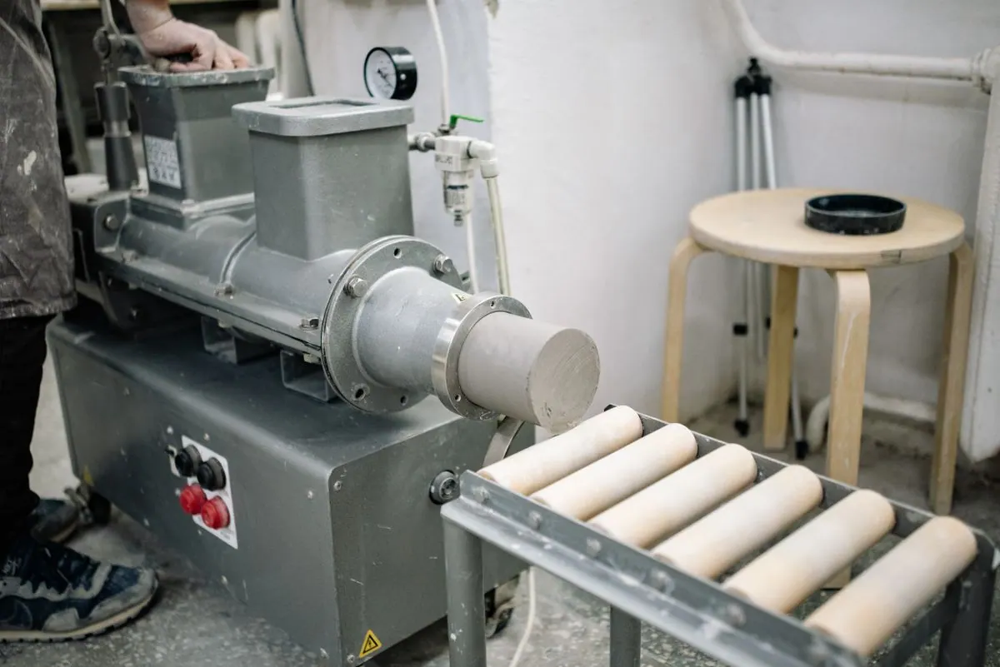

Ceramic tile press & kiln line
Forms and fires clay or porcelain body into finished floor or wall tile.
Power
40–180 kW
Typical capacity
3,000–8,000 m²/day
Typical lead time
75–120 days
Full specs
- Hydraulic press cycle down to single-digit seconds per tile, tuned to body thickness
- Roller-hearth or shuttle kiln firing, matched to porcelain or ceramic body
- Automatic glaze line for single-fire or double-fire production
- PLC-controlled firing curve with temperature-log traceability